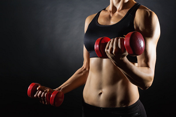
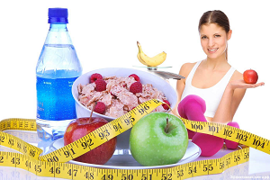

Цель многих бодибилдеров – набрать массу и избавиться от жира одновременно. К сожалению, большинство из тех, кто тренируется с этой целью в голове, стоят на одном месте в течение нескольких месяцев, а то и лет. Это приводит к тому, что бодибилдеры становятся экстремистами. Является это естественным стремлением личности, или привычки вызывают подобные заметные и устойчивые изменения, но это звучит справедливо для большинства. Вы потребляете количество еды, достаточное для того, чтобы прокормить небольшую страну во время набора мышечной массы, но во время фазы похудения разворачиваетесь и начинаете питаться как птичка.

Каждый, кто когда-либо проходил фазы набора веса или сжигания жира, точно знает, о каких крайностях сейчас идет речь. Чтобы набрать мышечную массу, организму необходима еда в большом количестве и сокращение всей посторонней деятельности. Чтобы убрать жир после такого набора массы, телу нужно намного меньше калорий и намного больше усердных кардиотренировок. Чтобы найти взаимный компромисс между набором массы и потерей жира, внесите компромиссные решения в оба направления.
Однако вместе с пониманием того, как функционируют различные системы организма, мы можем понять и применять лучшие упражнения и режимы тренировок. Такой комплексный подход позволит достичь целей в наборе мышечной массы и потере жира одновременно. Однако план, описанный ниже, немного экстремален и рассчитан на профессионалов. Но если в вас достаточно желания следовать ему, вы сможете достичь этих двух взаимоисключающих целей одновременно.
Мы собираемся воспользоваться гормональным состоянием организма, поскольку оно относится к ежедневным циркадным ритмам, упражнениям и режиму потребления питательных веществ. План включает периоды экстремального недоедания для потери жира, и экстремального переедания для набора мышечной массы в сочетании с тренировками для похудения, так и тренировками для рельефа и набора мышечной массы. Большую часть времени вы будете придерживаться режима потери жира, потребляя небольшое количество углеводов и калорий и выполняя упражнения для сжигания жира. Остальное время вы будете либо спать, либо есть как сумасшедший, чтобы стимулировать синтез белка, набирать мышечную массу и использовать анаболические гормоны, произведенные тяжелыми тренировками и режимом питания.
Пример расписания на неделю
Понедельник – утром кардио*, вечером силовая тренировка
Вторник – высокоинтенсиная кардио в любое время дня
Четверг – высокоинтенсиная кардио в любое время дня
Пятница – утром кардио*, вечером силовая тренировка на рельеф
Суббота – высокоинтенсиная кардио в любое время дня, потребление калорий для поддержания текущего веса
Воскресенье – нет тренировок, потребление калорий для поддержания текущего веса
* (наличие кардио утром зависит от индивидуальных особенностей организма).
Кардио
тренировка для рельефа
Некоторые виды кардио следует выполнять 3-6 дней в неделю, и чередовать длительные, низкоинтенсивные и высокоинтенсивные тренировки для похудения. Ходьба по наклонной беговой дорожке в течение 45 минут – идеальный вариант для длительной кардионагрузки, которую следует выполнять в дни силовых тренировок (до 3 раз в неделю).
Бег на свежем воздухе, на беговой дорожке и/или езда на велосипеде – это отличные варианты для высокоинтенсивной тренировки, которую следует выполнять в дни отсутствия силовых тренировок (2-3 раза в неделю). О вариантах высокоинтенсивных тренировок вы можете прочесть в материале "Высокоинтенсивная интервальная тренировка для сжигания жира".
Соблюдайте рамки максимальных показателей: 3 кардиотренировки и 3 высокоинтенсивные тренировки в неделю. Спортсменам со средним уровнем метаболизма подойдут 3 высокоинтенсивные тренировки, без кардио. Тем, у кого высокий уровень метаболизма, необходимы только 1-2 высокоинтенсивные тренировки в неделю.
Силовые тренировки
Режим ваших силовых тренировок порой бывает важнее, нежели само наполнение. Для программы наращивания мышц и одновременного сжигания жира важно, чтобы силовые тренировки приходились на послеобеденное время/ранний вечер, что позволит сжигать жир в течение дня. В это время вы придерживаетесь рациона с низким содержанием углеводов/калорий. Также при планировании силовых тренировок следует учесть, что они должны проходить не позже, чем за 6 часов перед сном. Это время, когда вы переедаете, чтобы стимулировать синтез белка и пополняете запасы гликогена. Если вы делаете это слишком рано, вы остановите процесс сжигания жира в остальной части дня.
Силовые тренировки для рельефа следует проводить 3 раза в неделю через день, например, ПН/СР/ПТ или ВТ/ЧТ/СБ. Тренировочные сессии должны состоять из тяжелых базовых упражнений с некоторым наложением работы на различные группы мышц. Другими словами, не выделяйте одну тренировку только для рук. Вам нужны тренировки, которые стимулируют большое количество анаболических гормонов и рост мышечной массы.
Диета

А теперь самое интересное, питание! Диета делится на 2 отдельные фазы, с низким содержанием калорий/углеводов и с высоким содержанием калорий/углеводов. Ниже представлены рекомендации:
Низкая доля калорий/углеводов
Длительность – весь день, когда отсутствует силовая тренировка и ½ дня, когда есть силовая тренировка
Потребление калорий – 10-12 х вес тела
Доля макроэлементов – 50% белков, 30% жиров и 20% углеводов
Высокая доля калорий/углеводов
Длительность – только в дни силовых тренировок. От начала тренировочной сессии до сна
Потребление калорий – такое же, как при низком потреблении калорий, но эти калории следует потреблять в промежуток времени 6-8 часов (10-12 х вес тела или 1600-1900 ккал для человека с весом 70 кг).
Доля макроэлементов – 20% белков, 5% жиров и 75% углеводов
Доля калорий/углеводов для поддержания текущего веса
Длительность – выходные
Потребление калорий 15х вес тела
Доля макроэлементов – 50% белков, 30% жиров и 20% углеводов
Исходя из этого, бодибилдеру с весом 70 кг необходимо 1600-1920 ккал при низком потреблении калорий/углеводов. Доля 50% / 30% / 20% предполагает потребление 200 г белков/ 53 г жиров / 80 г углеводов.
Полезные добавки
Ускорить процесс набора мышечной массы поможет спортивное питание – протеин, креатин, гейнер, аргинин, BCAA, аминокислоты. Эти добавки специально разработаны для спортсменов и фитнес-активных людей разного уровня подготовленности. Такие препараты совершенно безопасны, а их эффективность уже доказана.